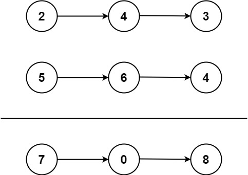

2. 两数相加
哨兵 + 逐位相加：两条链从表头（个位）一起走，短的当 0，每位写 sum % 10、进位 sum / 10。
思路
- 数字逆序存储，个位正好在表头：两条链从头对齐相加即可。
- 循环条件
l1 != null || l2 != null || carry != 0：短链走完当 0；都走完但还有进位时，再转一圈补一个结点。 - 每位
sum = carry + 两值：本位写sum % 10，进位记sum / 10。 - 结果挂在哨兵
dummy后面，tail一路后移，最后返回dummy.next。
图解
最优解
1class Solution {2 public ListNode addTwoNumbers(ListNode l1, ListNode l2) {3 // 哨兵：结果链挂在 dummy 后面，省去判头4 ListNode dummy = new ListNode(), tail = dummy;5 // 进位：本位满十，向高位进 16 int carry = 0;7 // 一起走：短链当 0；都走完且无进位才停8 while (l1 != null || l2 != null || carry != 0) {9 int sum = carry;10 if (l1 != null) { sum += l1.val; l1 = l1.next; }11 if (l2 != null) { sum += l2.val; l2 = l2.next; }12 // 本位写 sum % 10，进位记 sum / 1013 tail.next = new ListNode(sum % 10);14 tail = tail.next;15 carry = sum / 10;16 }17 return dummy.next;18 }19}题目
给你两个 非空 的链表，表示两个非负的整数。它们每位数字都是按照 逆序 的方式存储的，并且每个节点只能存储 一位 数字。
请你将两个数相加，并以相同形式返回一个表示和的链表。
你可以假设除了数字 0 之外，这两个数都不会以 0 开头。
示例 1：

输入：l1 = [2,4,3], l2 = [5,6,4] 输出：[7,0,8] 解释：342 + 465 = 807.
示例 2：
输入：l1 = [0], l2 = [0] 输出：[0]
示例 3：
输入：l1 = [9,9,9,9,9,9,9], l2 = [9,9,9,9] 输出：[8,9,9,9,0,0,0,1]
提示：
- 每个链表中的节点数在范围
[1, 100]内 0 <= Node.val <= 9- 题目数据保证列表表示的数字不含前导零
题面取自力扣当前版本。
数据快照 2026-11-04。题面版权归力扣所有，本站点仅供本人学习使用，请勿对外发布。